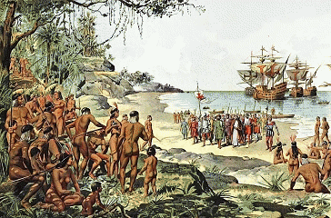
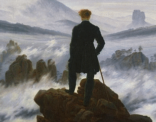
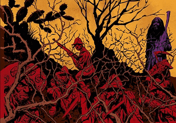
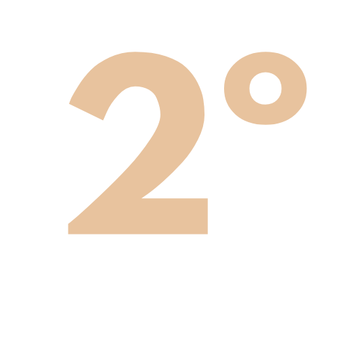

Que tal mergulhar no mundo literário e aprender com isso?
O Portal das Letras é um website criado para te auxiliar no aprendizado dos conteúdos literários exigidos na grade curricular do ensino médio. Vamos lá?
Que tal mergulhar no mundo literário e aprender com isso?
O Portal das Letras é um website criado para te auxiliar no aprendizado dos conteúdos literários exigidos na grade curricular do ensino médio. Vamos lá?
O website ‘Portal das Letras’ é produto de um projeto de iniciação científica do Instituto Federal do Triângulo Mineiro, e tem como objetivo auxiliar no estudo dos conteúdos de literaturas presentes na grade curricular do ensino médio, tudo em um só lugar e com fácil acesso.
As matérias estão divididas nas 3 classes para facilitar a localização do que você procura, basta clicar no botão da série desejada e toda a grade curricular/conteúdo será mostrado.

Introdução à literatura / poema / primeiros períodos literários

De romantismo à naturalismo

Pré-modernismo / modernismo / pós-modernismo
A matéria durante o primeiro ano conta com o estudo de diversos períodos literários, sendo ela:
A matéria durante o primeiro ano conta com o estudo de diversos períodos literários, sendo ela:

A matéria durante o primeiro ano conta com o estudo de diversos períodos literários, sendo ela: